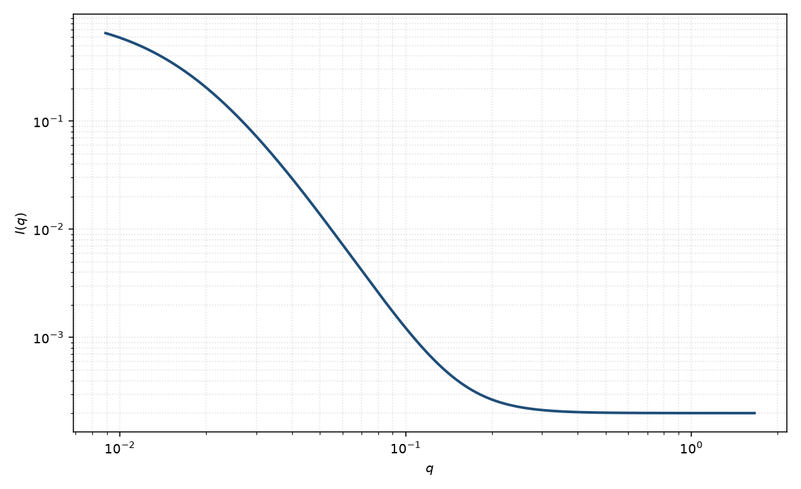

Debye–Anderson–Brumberger
DAB
适用场景
两相随机介质、孔材料或旋节后期的无规两相，相关函数接近 $\exp(-r/\xi)$ 时，用 Debye–Anderson–Brumberger。高 $q$ 自动给出 Porod $q^{-4}$，低 $q$ 由 $\xi$ 决定。
若高 $q$ 是 $q^{-2}$ 而不是 $q^{-4}$，应改用洛伦兹。界面分形则改用表面分形。有峰时不是随机两相。
物理图像
Debye 把两相介质的相关函数取为 $\gamma(r)=\exp(-r/\xi)$。三维 Fourier 得到 $I(q)\propto \xi^3/(1+q^2\xi^2)^2$。Porod 长度与 $\xi$、体积分数相联系：$S/V=4\phi(1-\phi)/\xi$。
这是形状无关的两相统计，不假定孔或颗粒的外形。磁性两相（磁化/未磁化）可以单独定义磁 $\xi$。
示意图

核心公式
DAB 强度（两相衬度 $\Delta\rho$、体积分数 $\phi$）
$$I(q)=\frac{8\pi\phi(1-\phi)(\Delta\rho)^2\xi^3}{(1+q^2\xi^2)^2}+B.$$比表面积 $S/V=4\phi(1-\phi)/\xi$。高 $q$ 回到 $I\sim 2\pi(\Delta\rho)^2 S/q^4$。
参数表
| 参数 | 符号 | 含义 | 单位 | 典型范围 |
|---|---|---|---|---|
| 关联长度 | $\xi$ | 两相随机介质的 Debye 长度 | Å | 10–1000 Å |
| 体积分数 | $\phi$ | 其中一相所占分数 | 无量纲 | $0.05$–$0.95$ |
| 衬度 | $\Delta\rho$ | 两相 SLD 差 | Å$^{-2}$ | 由组成或对比实验 |
| 标度 / 本底 | $\mathrm{scale}$, $B$ | 前置因子与常数本底 | 与强度单位一致 | 实验相关 |
拟合注意
取向：随机两相假定各向同性。拉伸后的泡沫或层状两相应改用各向异性 $\xi$ 或层状模型。
多分散孔径表现为 $\xi$ 的有效值，界面粗糙会让指数偏离 $-4$。磁性 Porod 面积用磁衬度计算，不要混用核 $\Delta\rho$。
可辨识性：$\phi$ 与 $(\Delta\rho)^2$ 只以乘积出现，除非绝对标定加已知衬度。$\xi$ 与本底在低 $q$ 窗口相关。
相近模型
参考文献
- Debye, P.; Anderson, H. R., Jr.; Brumberger, H. Scattering by an inhomogeneous solid. II. The correlation function and its application. J. Appl. Phys. 1957, 28, 679–683. DOI: 10.1063/1.1722748